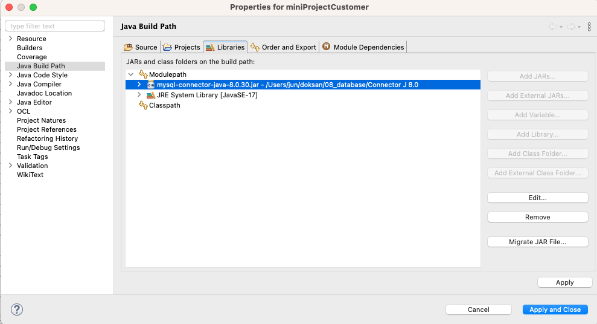
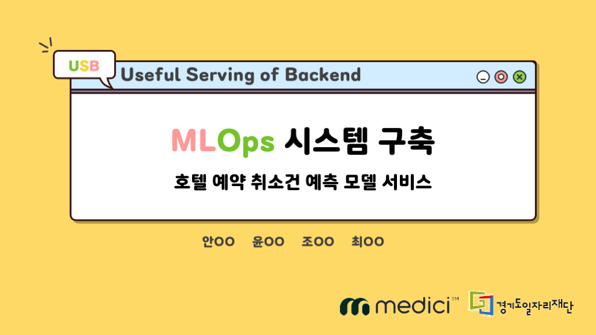
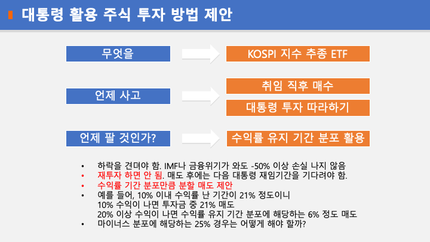
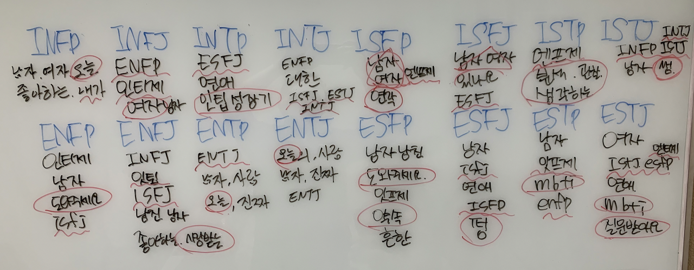

👀
Home
읽은 책
오답노트
프로젝트
블로그
Contact
프로젝트

Java Swing으로 MySQL 연동하여 CRUD 구현
이클립스에서 MySQL 연결
Dec 23, 2022
독산 미니 프로젝트 - 유사 도서 추천 시스템, 챗봇
앱 시연
Oct 27, 2022
독산 미니 프로젝트 - 경기도 지역 내 등록반려동물수 코로플레스 맵
프로젝트가 끝나고 다시 보다 잘못 처리한 걸 발견함. 시군구 데이터가 아래 읍면동 데이터를 포함하고 있는 것을 간과하고 모두 합함 즉, 인구가 2배가 됨
Oct 27, 2022

구리 최종 프로젝트 - MLOps 시스템 구축
프로젝트 git repository
Sep 29, 2022

구리 두 번째 미니 프로젝트 - 대통령과 주가
얻은 게 많은 프로젝트였다. 판다스 시리즈와 데이터프레임를 변형하며 마주친 오류를 해결하는 과정에서 인덱스를 이해할 수 있었다. 표에 자료를 입력하고 생성, 병합하는 것도 익숙해졌다. 데이터를 만지며 새로운 아이디어가 떠오르고 다시 데이터로 검증하는 과정이 꽤 흥미로웠다. 주식에 투자할 때마다 다른 사람들의…
May 27, 2022

첫 미니 프로젝트 - MBTI 유형별 인터넷 카페 게시글 제목 비교
파이썬과 크롤링, MySQL을 배우고 첫 번째 프로젝트 과제가 주어졌다. 주제는 정해줄 줄 알았는데 자유 주제였고 시간도 주말을 제외하면 하루밖에 주어지지 않아 품질보다는 속도에 촛점을 맞추기로 했다. 크롤링과…
May 13, 2022
일치 없음